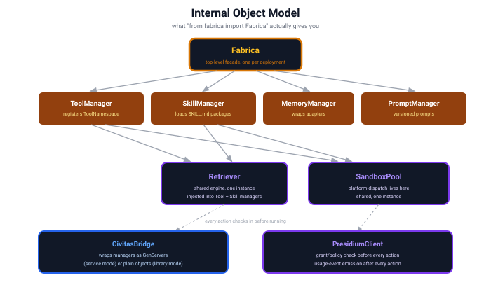
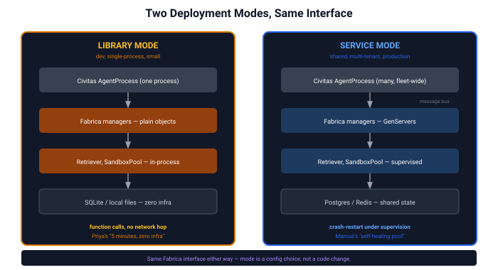
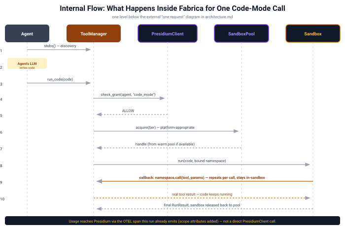

System Design¶
Status: Design, pre-contracts · Last updated: 2026-08 Precedes: contracts (exact signatures, error types, async behavior) Follows: architecture.md (what & why) — this doc is the how
This is the layer between "what Fabrica is" (architecture.md) and "what code do
I write" (contracts, not yet written). It answers questions architecture.md
deliberately left as boxes-and-arrows: what are the actual Python objects, who
owns what state, what happens when something fails, what gets traced.
1. Internal object model¶
What from fabrica import Fabrica actually gives you — one facade, four domain
managers, two shared engines injected into the managers that need them, and two
bridge objects that connect outward to Civitas and Presidium.

Why Retriever and SandboxPool are shared, singular instances, not one per
manager: retrieval.md's whole thesis is that tools and skills use the same
engine (that's what fixed the O(1)-vs-linear gap). Duplicating Retriever
per-manager would silently reintroduce the bug that unification fixed. Same logic
for SandboxPool — one pool, drawn from by both code-mode tool execution and
skill script execution, not two pools competing for the same host resources.
Why ToolManager and SkillManager stay separate classes, not one generic
manager: they look similar (both register into Retriever, both run things in
SandboxPool) but differ in ways that matter — ToolManager registers
developer-authored namespaces and executes arbitrary, freshly-generated code;
SkillManager parses the SKILL.md file format and executes pre-written,
author-trusted scripts by name with structured args. Forcing one class to cover
both would mean branching on kind inside what should be a clean abstraction.
What they do share — composition, not inheritance: the orchestration around
execution (check grant → acquire sandbox → run → release → handle errors → emit
spans) is identical regardless of what's being executed. Both call a single
shared helper, execute_in_sandbox(presidium_client, sandbox_pool, action, ...),
for that part — the same dependency-injection pattern Retriever and
SandboxPool already use, extended to the one piece of logic that was actual
copy-paste risk, without conflating two different trust models into one class.
Why CivitasBridge and PresidiumClient are separate objects, not methods
on Fabrica itself: they're the only two places this system talks to something
outside itself. Isolating them means every outbound call — to the runtime, to
governance — goes through one seam, which is where mocking, circuit-breaking, and
the fail-closed behavior in §6 all live in one place instead of scattered across
four managers.
Correction: CivitasBridge must have the same shape as PresidiumClient, not
just sit next to it. An earlier version of this section (and the component
matrix in §4) described CivitasBridge as something that "registers GenServers
with the supervision tree" — language that implies reaching into Civitas's
supervision tree and manipulating it directly. That's inconsistent with
PresidiumClient's own design one paragraph below: check_grant asks
Presidium a question; Presidium's own internal logic decides the answer, and
PresidiumClient never reaches into Presidium's internals to decide it itself.
CivitasBridge must work the same way toward Civitas: it requests, Civitas
performs. CivitasBridge never touches a supervision tree or a StateStore
directly — it calls request_supervision(component_name, spec) -> SupervisionHandle
and request_state_persistence(key, ...) -> StateHandle; Civitas's own runtime
decides how to fulfill each request and performs the actual registration or
write. This also means no manager talks to Civitas directly, even for
state persistence — PromptManager's and MemoryManager's dependence on
Civitas's StateStore (§4–§5) is mediated through CivitasBridge's
request_state_persistence, not a direct call from the manager itself. Without
this correction, the earlier phrasing would have quietly created a third
place this system talks outward, contradicting the very sentence above it that
says there are only two. This same request-not-reach-in rule is also what keeps
any future, bounded extension of CivitasBridge's scope (discussed and
deliberately deferred) from becoming an exception to this pattern later — the
rule doesn't get renegotiated as scope grows, it's applied consistently
regardless of what CivitasBridge eventually does.
PresidiumClient is deliberately smaller than it first looks. Presidium is a
genuinely separate deployment (not co-located with Civitas), reached over REST +
mTLS — so PresidiumClient has exactly one method: check_grant/check_policy,
synchronous (you can't proceed without knowing ALLOW/DENY), circuit-breaker
protected, fail-closed on timeout or an open breaker. There is no
emit_usage_event method. Usage reaches Presidium as attributes on the OTEL spans
Fabrica already emits for its own observability (§7) — async by construction
(OTEL's exporter batches in the background), reusing existing plumbing instead of
building a second one. Presidium implements its own span consumer watching for
fabrica.* spans; that consumer is Presidium's concern, not something
PresidiumClient calls out to.
2. Deployment topology: library mode vs. service mode¶
Every manager, plus Retriever and SandboxPool, works both ways. The interface
above doesn't change — only what's underneath it.

This isn't a spectrum — it's a binary per-deployment choice, matching how
Civitas and Presidium already work. A team doesn't run "70% service mode"; they
run library mode until they outgrow it, then flip to service mode, same interface,
zero application-code changes. CivitasBridge's job (§1) is entirely this: decide
once, at construction time, which shape each manager takes.
Phased, deliberately — v1 is one flag, v2 is per-component, and v2 doesn't
break v1. Fabrica takes a single top-level mode: "library" | "service" in
v1; CivitasBridge propagates that one value uniformly to every manager,
Retriever, and SandboxPool. But CivitasBridge treats mode selection as a
per-component decision internally from day one — v1 just always passes the
same value to every component. This makes v2 (per-component overrides, e.g.
Fabrica(mode="library", overrides={"sandbox_pool": "service"}), for when
Marcus needs the warm pool to scale independently of everything else) a purely
additive feature later, not a rework: nothing about the internal wiring or
the public contract assumes uniformity, v1 just happens to always request it.
3. Internal flow: one code-mode call, in detail¶
architecture.md §3 and §8 show this from the outside (model↔Fabrica, then
user↔agent↔Fabrica). This is what happens inside Fabrica for a single call —
including a detail neither of those diagrams shows: the sandbox doesn't have
magic access to real tools. It calls back into ToolManager for every real tool
invocation the generated code makes.

The callback loop (step 9) is the load-bearing detail. It's why
intermediate data never leaves the sandbox: the generated code calls
namespace.call(tool, params), that call crosses back to ToolManager (which
actually has network/filesystem/API access), the real result crosses back in —
but only the next line of generated code sees it, not the model. This is the
mechanism, not a diagram simplification. Getting the callback transport wrong
would break the whole token-savings story from
SPIKE-code-mode-execution.md.
The callback transport, resolved: a shared wire protocol (ZMQ) over a tier-specific bridge — not one uniform transport, and not a different RPC implementation per tier either:
- Tier 0/1 (no real VM boundary — subprocess, gVisor,
srt): ZMQ binds directly viaipc://(Unix domain socket). No relay needed — guest and host share a kernel. - Tier 2 (real VM boundary — Firecracker, libkrun, eventually Hyper-V): a
small relay, baked into the guest image the same way the tool-namespace shim
already is, speaks ZMQ locally to the sandbox-side shim and bridges those
bytes across the actual platform-specific channel —
vsockfor Firecracker,VZVirtioSocketDevicefor libkrun,AF_HYPERVfor Hyper-V — to a matching bridge on the host side, which re-exposes ZMQ toToolManager.
This means ToolManager and the sandbox-side shim speak only ZMQ, always
— tier/platform-specific complexity collapses into one small, isolated relay
component instead of being spread across the application-level RPC code. It
may also let Fabrica reuse Civitas's own ZMQ transport implementation (already
part of its scaling ladder) rather than hand-rolling a second one. The relay is
trusted, Fabrica-controlled infrastructure the generated code never touches
directly — the same trust boundary as the tool-namespace shim already
described in isolation.md.
Sanity-checked: SPIKE-zmq-sandbox-channel-feasibility.md
confirmed Tier 0/1's half of this — pyzmq bundles its own statically-compiled
libzmq (1.6MB, self-contained, no system dependency chain needed), and a real
ipc:// round trip measured 0.73ms, negligible overhead. Still not
verified: the Tier 2 relay bridge itself (vsock/VZVirtioSocketDevice/
AF_HYPERV) and behavior inside an actual booted guest rather than the same
OS/arch on bare metal — the harder half of this design, deliberately left for
its own dedicated spike rather than attempted alongside the easier half.
4. Component responsibility matrix¶
Correction, matching contracts/civitas-bridge.md's own "Correction
found during implementation" section: earlier revisions of this table
labeled every manager below "GenServer" under Service mode. Reading
civitas.runtime.Runtime.spawn's and DynamicSupervisor's real
implementation found this structurally doesn't fit -- dynamic-spawn
reconstructs a class from a dotted path with only name, no way to
hand it an already-constructed object holding live dependencies. This
table was never actually fixed to say so until now, silently
contradicting civitas-bridge.md's own, correct account of the same
finding -- caught while walking through PLAN.md item 22 directly with
the user (Civitas's own maintainer), not found by inspection alone. See "Finding: managers as supervised GenServers, investigated but not
built" below for the full reasoning, including why this isn't just a
technical blocker to work around.
| Component | Owns | Depends on | Library mode | Service mode |
|---|---|---|---|---|
Fabrica |
top-level config, wiring | all managers | plain object | plain object (always — it's the entry point, never itself a GenServer) |
ToolManager |
ToolNamespace registration, code-mode orchestration |
Retriever, SandboxPool, PresidiumClient, shared execute_in_sandbox helper |
in-process | plain object, same constructor-injected shape as library mode -- NOT a GenServer (see correction above) |
SkillManager |
SKILL.md loading, skill execution orchestration |
Retriever, SandboxPool, PresidiumClient, shared execute_in_sandbox helper |
in-process | plain object, same as library mode |
MemoryManager |
adapter lifecycle (Mem0 etc.) | configured MemoryStore adapter |
in-process | plain object; only its PERSISTENT STATE moves to a ComponentStateHandle backed by Civitas's real StateStore (contracts/memory.md's PersistedMemoryStore) -- the manager object itself is not a GenServer |
PromptManager |
PromptStore |
Civitas StateStore, mediated through CivitasBridge.request_state_persistence — never called directly (§1's correction) |
in-process | plain object; same persistent-state-only distinction as MemoryManager (PersistedPromptStore) |
Retriever |
index, search | KeywordBackend (default) or an adapter |
in-process, local index | plain object, same as library mode -- "shared fleet-wide" (if ever needed) means pointing multiple replicas' Retrievers at the same real external RetrieverBackend, not making Retriever itself a GenServer |
SandboxPool |
tier selection, pool of handles, platform dispatch, baking the guest image (tool-namespace shim +, for Tier 2, the ZMQ relay) | a Sandbox backend (subprocess/gVisor/Firecracker/srt/libkrun) |
in-process, small pool | plain object, same as library mode -- see the finding below for why crash-resilience here is better served by process-level supervision than per-manager GenServer-ification |
CivitasBridge |
mode selection at construction time; the ONLY caller of request_supervision/request_state_persistence |
Civitas Runtime |
no-op | request_supervision is real and tested against Civitas's real Runtime/DynamicSupervisor, available for a genuinely fresh, self-contained GenServer class -- but no manager in this codebase calls it (see the finding below) |
PresidiumClient |
grant/policy checks only — no usage-emission method | Presidium's REST endpoint (mTLS) | same: REST + mTLS, circuit-breaker protected (Presidium is always a separate deployment, not affected by Fabrica's own mode) |
Finding: managers as supervised GenServers, investigated but not built¶
PLAN.md item 22 ("managers as supervised GenServers, 'self-healing
pool'") was walked through directly with the user -- Civitas's own
maintainer -- rather than decided unilaterally, per this project's own
norm for architecture-level calls. Recorded here in full, not just as a
commit message, since the reasoning matters as much as the conclusion.
The technical blocker, confirmed against real Civitas source, not
assumed: Runtime.spawn() reconstructs an agent from a dotted class
path via agent_class(name=child_name) -- only name, nothing else --
then bolts a small fixed set of attributes on afterward
(agent._bus/agent.llm/agent.tools/agent.store/agent.config).
spawn() itself returns only the spawned name, never a reference to the
live instance. There is no path for a manager built as
ToolManager(retriever, sandbox_pool, presidium_client) -- three live,
stateful, non-reconstructible objects -- to survive this. Full detail:
contracts/civitas-bridge.md's own "Correction found during
implementation" section.
Why this isn't just a mechanism gap to work around: the maintainer
confirmed class_path/name/config was never meant to be a
permanent, hardened contract -- it's an early, simpler stand-in for a
much more ambitious, genuinely unresolved idea: serializing a running
process's real state and moving ("teleporting") it to another node,
resuming from suspension -- true node-failure resilience and trivial
autoscaling, closer to Erlang-style process mobility than a simple
restart-from-config. Real, worth pursuing on its own merits -- but
tested here against whether Fabrica's own managers are a good
motivating use case for it, and they aren't:
SandboxPool's interesting state -- live warm handles (real Firecracker VMs, real subprocess PIDs, real sockets) -- is physically tied to one host's hardware. A running KVM guest cannot be serialized and resumed on different hardware; that's not a Python-object-serialization problem, it's "the VM exists on this hypervisor." If the node dies, that warm pool is gone regardless of migration technology. What would survive is just the pool's configuration (backend choice, sizing) -- reconstructing a fresh pool from that on a new node, cold-booting new sandboxes there, is both achievable TODAY with the existing simple spawn mechanism and the CORRECT behavior anyway.Retriever's registered catalog is genuinely serializable, but trivially re-derivable -- whatever calledregister()at startup can just do it again on a fresh instance. Nothing expensive is lost by not migrating it.MemoryManager/PromptManageralready delegate nearly all real state to an external, durable backend (MemoryStore/PromptStore) -- the manager object itself holds almost nothing worth preserving.ToolManager/SkillManager's registered namespaces often wrap live things themselves (closures, real MCP client connections) that aren't cleanly serializable regardless of what Civitas does.
None of Fabrica's managers hold the thing that would actually justify live migration: expensive-to-reconstruct state that isn't either host-bound-and-therefore-non-transferable, or trivially replayable from an external source of truth. Building the bigger capability just for Fabrica's sake would undersell what it deserves as a use case.
What Fabrica's real, narrower need actually is: SandboxPool's own
bookkeeping (warm-handle list, background refill tasks, a condition
variable coordinating them) is the one place genuinely fragile,
long-lived internal state exists. If an undiscovered bug wedges it, the
pool degrades quietly. That's a process-CRASH-RECOVERY problem, not a
migration problem -- and it's already substantially addressed if the
whole Fabrica-embedding process sits under ORDINARY Civitas supervision
(even a plain static child in the topology, no dynamic spawn needed at
all): a crash already triggers Civitas's existing restart mechanism,
cold-booting a fresh Fabrica/SandboxPool via ordinary
CivitasBridge.build(). Real resilience today, just at process
granularity instead of per-manager.
Resolved as a documented finding, not a rejection -- this project
has never run in real production under real failure conditions, so this
reasoning is exactly that: reasoning, not something battle-tested
against a real incident. Recorded here explicitly as a known,
consciously-accepted gap rather than closed as "unneeded" -- revisit,
specifically, if: (a) real production experience shows process-level
restart granularity is genuinely too coarse (e.g., SandboxPool
wedging forces restarting healthy, unrelated request-serving alongside
it often enough to matter), or (b) Civitas's own live-migration/
"teleportation" concept gets built for a better-motivated use case
elsewhere, at which point it's worth asking again whether SandboxPool
specifically benefits. Not deferred vaguely -- these are the concrete
triggers, not "maybe someday."
5. State & persistence¶
| Component | State | Library mode | Service mode |
|---|---|---|---|
Retriever index |
tool/skill Indexables |
in-memory dict / BM25 | Postgres or Redis, shared |
SandboxPool |
warm handles, snapshot refs | local files / OS processes | shared node pool, snapshot store on disk or object storage |
MemoryManager |
conversation memories | SQLite + local vector (fastembed/chroma — the config SPIKE-memory-mem0-wrap.md validated) | hosted vector store, or a Postgres-backed adapter |
PromptManager |
prompt versions | local files or SQLite | Civitas StateStore (via CivitasBridge.request_state_persistence) / Postgres |
| Usage/budget counters | not owned by Fabrica at all | emitted to Presidium, not stored here | emitted to Presidium, not stored here |
That last row matters: per civitas-presidium-integration.md, Fabrica meters, Presidium owns the ledger. This table is a reminder that "state Fabrica owns" and "state Fabrica reports on" are different rows, not the same one.
6. Error handling & resilience¶
Genuinely new content — none of the design docs so far specify what happens when something breaks. Six real decisions, one flagged as a real availability tradeoff:
| Failure | Detection | Fabrica's response |
|---|---|---|
| Sandbox crashes mid-run | Civitas supervisor detects process death | ToolManager returns a structured error to the caller, not a silent hang. SandboxPool discards the handle and provisions a fresh one. Civitas restarts the supervisor's child; Fabrica does not reimplement supervision. |
Retriever backend (e.g. prx) unreachable |
persistent-process health check fails (same pattern validated in SPIKE-prx-invocation-latency.md) | falls back to KeywordBackend automatically, logs a degraded-mode event. Never fails the caller outright for this. |
| Presidium unreachable | REST timeout on check_grant, or an open circuit breaker after N consecutive failures |
fail closed — DENY by default. Never fail-open on a security check. This is a real, explicit availability-vs-safety tradeoff: a Presidium outage degrades Fabrica to doing nothing, on purpose. The circuit breaker means this triggers immediately once tripped, not after a fresh timeout wait on every call — and its cooldown/half-open retry protects Presidium from a thundering herd the moment it recovers. |
| Warm pool exhausted | acquire() finds no available handle |
Resolved — hybrid bounded overflow (see §7): cold-start on demand up to a hard max_concurrent ceiling; only queue (bounded wait + timeout, structured error if it expires) once that ceiling is hit. Never unbounded, never queues while the host still has headroom. |
| Generated code hangs | Sandbox.run(..., timeout=...) |
hard timeout enforced by the sandbox itself; process/VM killed; a TimedOut error returned, not a hang. |
| Memory backend fails to instantiate (e.g. missing local model files) | at MemoryManager construction, not first use |
fail fast at Fabrica startup, with a clear error — not a confusing failure mid-agent-task later. |
7. Observability: spans this system emits¶
Implemented -- all ten spans below are real (src/fabrica/observability.py,
fabrica.observability.Tracer/Span), not a design table waiting on
implementation. Closes the largest gap found in
self-reflection-report.md §3.3: previously
one call site emitted anything, as a logger.info stand-in, covering two
of the nine.
| Component | Span | Key attributes |
|---|---|---|
ToolManager |
fabrica.tool.find |
query, kind, result_count, latency_ms, volume_bytes (real Indexable.description bytes returned -- the context-footprint dimension, added alongside SkillManager's and PromptManager's own) |
ToolManager |
fabrica.tool.code_mode.run |
agent_id, code_hash, duration_ms, tool_call_count |
SkillManager |
fabrica.skill.find |
query, result_count, latency_ms, volume_bytes (same dimension as ToolManager.find()) |
SkillManager |
fabrica.skill.run |
agent_id, skill_name, duration_ms |
SandboxPool |
fabrica.sandbox.acquire |
tier, warm_hit, wait_ms |
SandboxPool |
fabrica.sandbox.run |
tier, duration_ms, cpu_seconds, exit_status |
Retriever |
fabrica.retriever.search |
backend, query, limit, top_rank |
MemoryManager |
fabrica.memory.write / fabrica.memory.search |
scope fields, backend, volume_bytes (real content byte length -- the usage/budget-metering dimension civitas-presidium-integration.md names) |
PromptManager |
fabrica.prompt.get / fabrica.prompt.put |
prompt_name, version, cache_hit (get only), volume_bytes (real content byte length -- the same dimension MemoryManager already emits; PromptManager previously emitted NOTHING at all, not just a missing attribute) |
PresidiumClient |
fabrica.presidium.check_grant |
decision, latency_ms |
A real, important finding while implementing this: civitas
.observability.tracer.Tracer/Span (real, public, exported from
civitas.observability.__all__) do NOT use OpenTelemetry's global
TracerProvider registry -- Civitas holds an instance-scoped provider and
propagates trace_id/parent_span_id explicitly via its own message-
envelope fields, not OTEL's context-propagation machinery. A plain
opentelemetry.trace.get_tracer() call inside Fabrica would NOT actually
route through Civitas's own span pipeline. fabrica.observability defines
Tracer/Span as structural Protocols matching Civitas's real shape
exactly (verified against the real class, not assumed --
tests/test_observability.py) -- a real civitas.observability.tracer
.Tracer satisfies them with zero adapter code, while every manager stays
importable and testable with no civitas installed at all (library-first).
No new Fabrica dependency was needed -- fabrica.observability imports
neither opentelemetry nor civitas; real OTEL functionality flows
transitively through civitas itself (already a hard Fabrica dependency,
already depending on opentelemetry-sdk), only when a caller supplies a
real Tracer instance.
Every component below CivitasBridge defaults to NullTracer() (a real
no-op, matching NullPresidiumClient/NullCompactor) unless a real
Tracer is explicitly injected -- CivitasBridge's own tracer
constructor parameter, deliberately NOT auto-constructing a real
civitas.observability.tracer.Tracer() by default, since that has real
side effects (an OTEL TracerProvider, a console exporter printing every
span when no OTLP endpoint is configured) that would silently change
behavior for every existing caller, this codebase's own test suite
included.
All spans ride Civitas's existing OTEL plumbing (civitas-presidium-integration.md
— "Fabrica emits, Civitas collects") — this table is what Fabrica emits, not a new
tracing mechanism.
These spans do double duty. Beyond tracing, they are also how usage reaches
Presidium (see §1) — which means every span above that has a resource-consumption
attribute (fabrica.sandbox.run's cpu_seconds, fabrica.tool.code_mode.run's
tool_call_count, etc.) must also carry Scope (user_id/session_id/agent_id/
team_id) as span attributes, so Presidium's span consumer can attribute
consumption to the correct budget scope. This is a real, small addition these
spans didn't need before — not an assumption already covered elsewhere.
Real implementation detail, worth stating precisely: Scope fields are
carried directly on the OUTER span (fabrica.tool.code_mode.run/
fabrica.skill.run, and the standalone fabrica.memory.write/search) --
not duplicated onto every nested child span underneath it
(fabrica.sandbox.acquire/fabrica.sandbox.run carry tier/timing/
result attributes only, no Scope). A real usage consumer correlates a
resource-consumption attribute on a child span (cpu_seconds) with its
parent's Scope via the real trace_id/parent_span_id linkage every
span in this table now carries -- the standard tracing pattern, not a
gap: duplicating Scope onto every nested span would be redundant, not
more correct.
Decisions made after this doc's first draft¶
All five items originally listed here as open have since been resolved through direct review, one at a time — kept below with the resolution and reasoning intact, not deleted, so the trail is visible. None were oversights; each is a real decision that could reasonably have gone another way.
- ~~Warm-pool-exhausted behavior~~ Resolved. Two config values on
SandboxPool:warm_size(pre-booted, ready) andmax_concurrent(hard ceiling, warm + cold-started combined).acquire()tries the warm pool first (8–11ms); if empty and undermax_concurrent, cold-starts on demand (bounded, ~1s per the Firecracker spike); only oncemax_concurrentis hit does it queue with a bounded timeout, returning a structured error if the timeout expires — never a silent hang. Chosen over unbounded cold-start specifically because it's the direct answer to Marcus's own stated fear: "a bad run can't touch the host or blow the budget... a runaway resource consumer" — unbounded cold-start under a traffic spike or adversarial burst is exactly that shape. Correction from contracts/sandbox.md: the refinement originally stated here ("a cold-started overflow sandbox... folded back into the warm pool rather than discarded") was imprecise in a way that matters. The instance itself is never reused — arbitrary generated code may have left arbitrary state in it, and reusing a dirty instance across calls would leak state across the isolation boundary this design exists to enforce. What actually happens: the used instance is always terminated; the pool regrows by restoring a fresh instance from the clean base snapshot, not by recycling the released one. The externally-visible effect (pool trends back towardwarm_sizeafter a burst) is the same; the mechanism matters and was stated wrong until the contract was written out precisely. Exact queue-timeout duration is left as an operator-tunable config value, not hardcoded here — it's a deployment SLA choice, not an architecture one. - ~~
PresidiumClient's exact transport~~ Resolved. REST + mTLS, since Presidium is a genuinely separate deployment, not co-located with Civitas. Circuit-breaker protected. Only one method exists (check_grant) —emit_usage_eventwas removed entirely, not made async, because usage already rides the OTEL spans Fabrica emits for its own observability (§7). Async preference was satisfied by reusing existing plumbing, not building new plumbing. - ~~The callback transport~~ Resolved (see §3): shared ZMQ wire protocol,
direct
ipc://for Tier 0/1 (no relay needed), a small guest-side relay bridging to the real platform-specific channel (vsock/VZVirtioSocketDevice/AF_HYPERV) for Tier 2. Implementation feasibility (e.g.libzmqinside a minimal Firecracker guest) still needs a sanity-check spike — the architecture is decided, the build artifact isn't yet proven. - ~~Should
ToolManagerandSkillManagerbe one generic class?~~ Resolved — composition, not inheritance, and not a merge. They stay separate classes: their loading (SKILL.mdparsing vs. namespace registration) and trust models (author-trusted named scripts vs. freshly-generated arbitrary code) genuinely differ. What's actually shared — the execute-in-sandbox orchestration — is one small helper both call, not a base class both inherit. - ~~Mode-switching granularity~~ Resolved — phased. v1 ships one top-level
flag (all components move together);
CivitasBridge's internals are built as if per-component granularity already exists, so v2's per-component overrides (when a real deployment need justifies the larger test matrix) are additive, not a breaking rework of v1's contract.
Where to go next¶
| If you want... | Go to |
|---|---|
| The external, product-facing view | architecture.md |
| Retrieval engine detail | retrieval.md |
| Isolation tier detail | isolation.md |
| Every claim checked against evidence | critique.md |